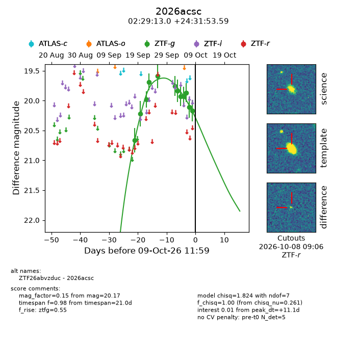
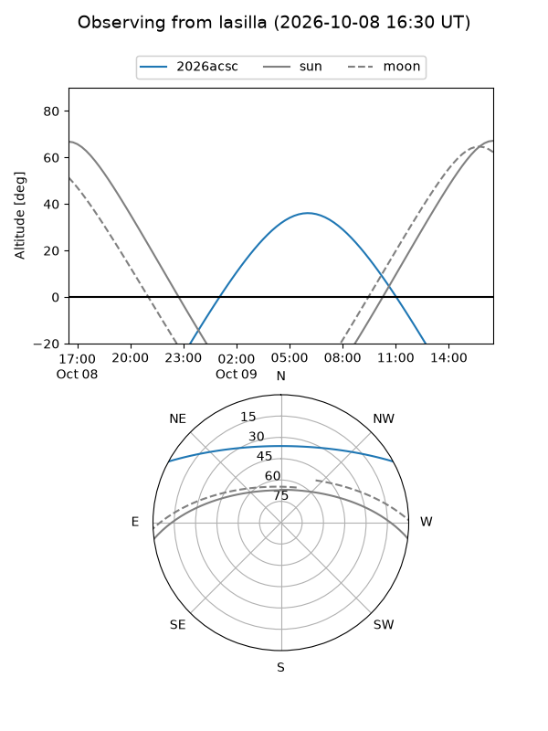
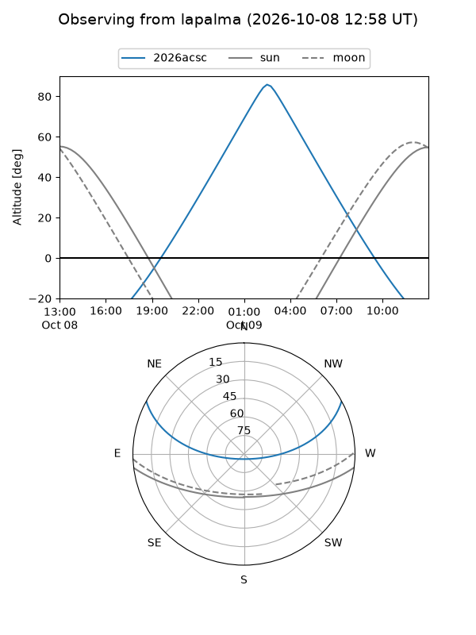
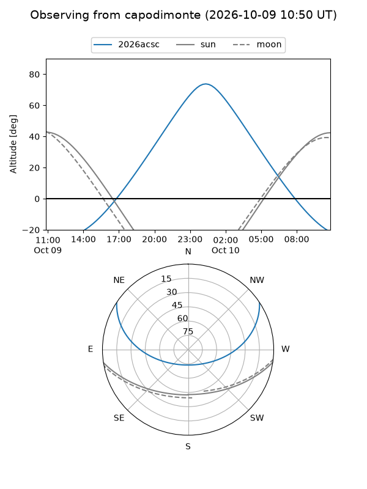
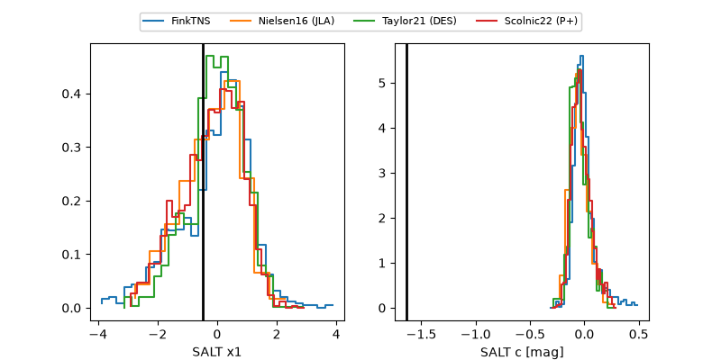

2026acsc
Target 2026acsc at 2026-10-09 12:01
Aliases and brokers:
FINK-ZTF: ztf.fink-portal.org/ZTF26abvzduc
Lasair-ZTF: lasair-ztf.lsst.ac.uk/objects/ZTF26abvzduc
ALeRCE-ZTF: alerce.online/object/ZTF26abvzduc
YSE-PZ: ziggy.ucolick.org/yse/transient_detail/2026acsc
TNS name: wis-tns.org/object/2026acsc
Direct TNS query: direct search
alt names
ZTF26abvzduc (ztf,fink_ztf)
2026acsc (tns,yse)
Coordinates:
equatorial (ra, dec) = 37.3041,+24.53155
equatorial (HMS+DMS) = 02:29:12.97,+24:31:53.59
galactic (l, b) = (149.6734,-33.21306)
Flags:
peak dt: +11.1
Photometry:
last ztfg=20.17
12 ztfg detections
Lightcurve

Visibility



Additional plots
